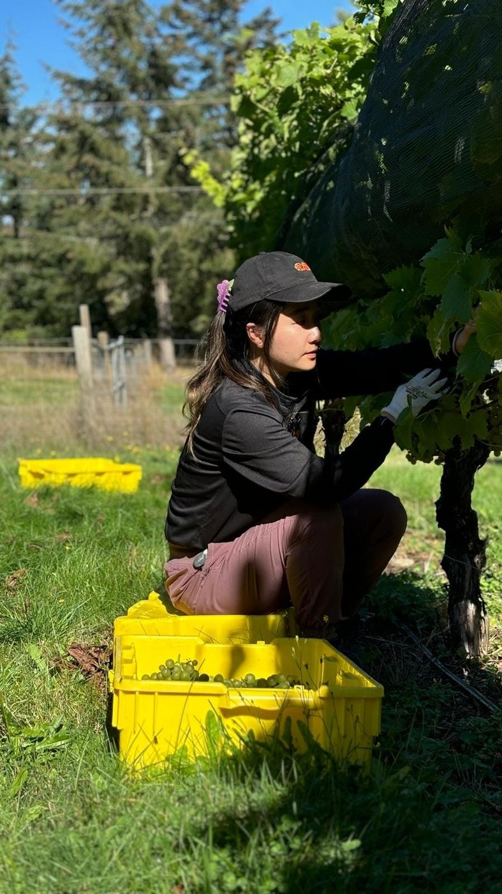

Wondering about everything, wandering everywhere
My work is intuitive, abstract, sometimes messy, and always honest.
It’s how I move through emotion, memory, and the parts of myself I can’t explain with words alone. I’m grounded through colour, texture, rhythm, and wisdom.
Painting
Moody hues and layers built from how I feel — acrylic, plaster, and 3D texture. See the work →
Poetry
The little moments and emotions, captured across places and seasons of life. Read →
Pottery
Hands-on, slow work that reminds me to be present.
Movement
Learning to tune into my body and what it’s trying to say.
Pottery and new paintings are added as they’re finished. Originals and commissions — email Faye.
Finding power in pause

My creative explosion began with grief.
After losing Jai, my dog and constant companion through my teens and twenties, something inside me shifted. I couldn’t keep going the same way — so I didn’t. I stepped away from tech, paused my career, and gave myself permission to wander.
What followed were two years of nomadic living across British Columbia.
Creativity returned not as productivity, but as personal power. As perspective. As presence. Now I create as a form of deep breathing — moments of pause that help me listen more closely to myself and the world around me.
I’m fascinated by what happens when we create not to perform, but to remember. That softness is strength. That we’re always allowed to begin again.
fragments & echoes, a limited-release poetry chapbook, lives on its own page.
Read the poetry →